| 日付 | 2020年10月4日（日） |
|---|---|
| 山域 | 奥多摩 |
| メンバー | 家族（長女・9歳） |
| 山行形態 | 子連れ日帰り |
| アクセス | 車 |
| ルート (Map) | 深山橋 (8:46) - (9:53) 大寺山 (10:02) - (11:30) 鹿倉山 (12:11) - (13:16) 大寺山 - (14:01) 深山橋 |
今週末は息子に用事があり、娘と二人で山に行くことにする。
娘は普段山を嫌がっているが、先日息子と二人で山に行ったのが羨ましかったようだ。
あまり天気は良くない予報だが雨は降らなさそうなため、
この機会に展望の開けない鹿倉山に行ってみる。
深山橋そばの駐車場に車を停める。標高530m。
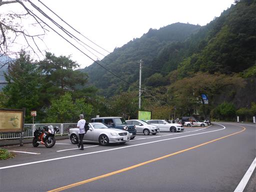
店の裏にある湖岸沿いの道を少し歩くと登山口に到着する。
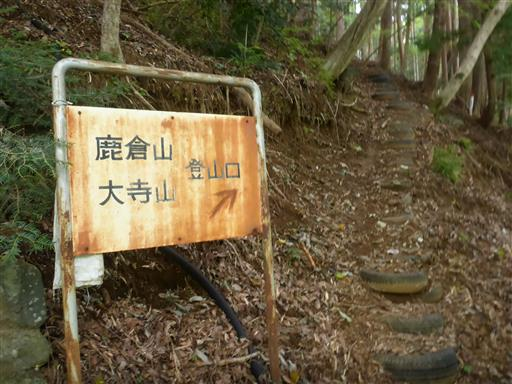
タイヤでできた階段。足にやさしい。

植林地帯の急斜面を登りきると、自然林の尾根道になる。
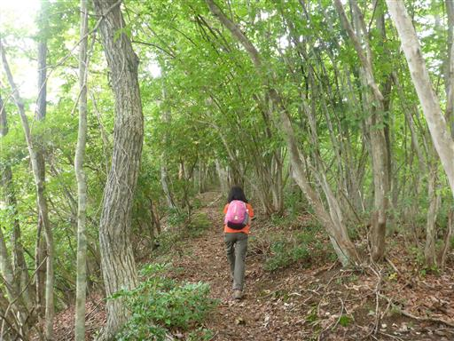
一箇所、痩せ尾根になって岩がちな地形になる。
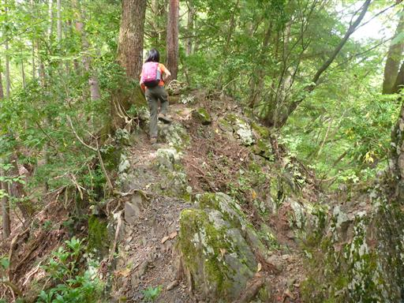
足元に栗がたくさん落ちている。いくつか栗を拾いながら歩く。
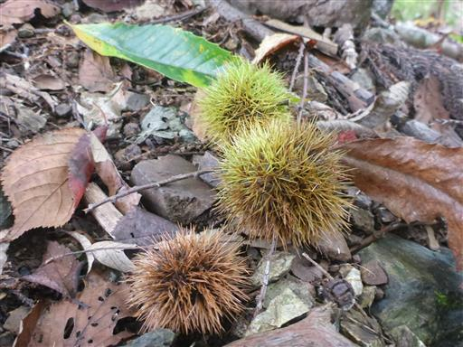
大寺山山頂にある仏舎利塔に到着する。
山頂にある巨大な建造物で、登山道から突然視界が開けて現れるため、
事前に存在を知っていなかったら、かなりびっくりするだろう。
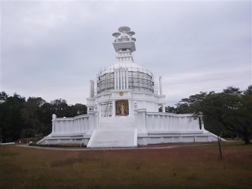
仏舎利塔をぐるっと一周する。
娘は中に何が入っているのかを頻りに尋ねていたが、中身は不明だ。
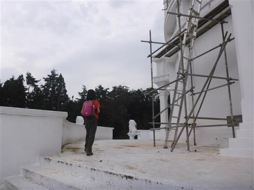
寝釈迦仏。仏舎利塔の4面に仏像が祀られている。
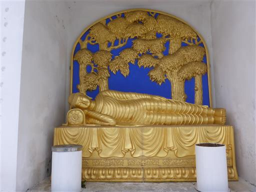
僅かに木が切り開かれているが、あまり展望は開けない。

彼岸花が少しだけ咲いている。
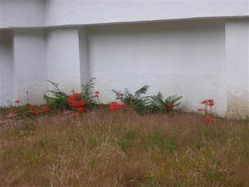
山頂の隅にひっそりと山頂標識がある。
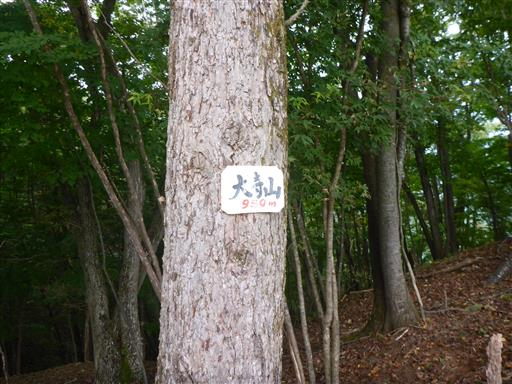
仏舎利塔を後にして、鹿倉山を目指す。
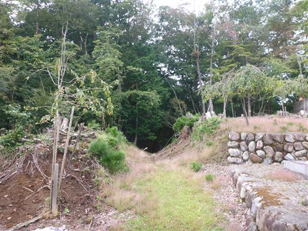
足元にブナの実を見つける。
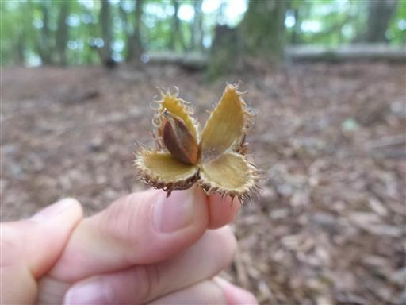
ハート形の木の根っこ。
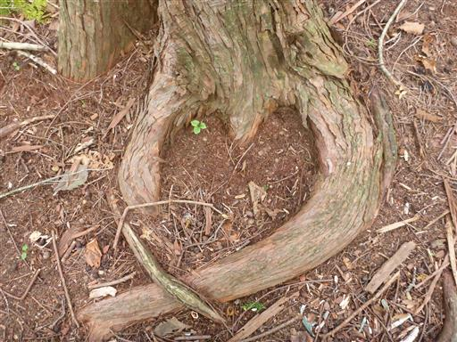
美しいオレンジ色のキノコ。
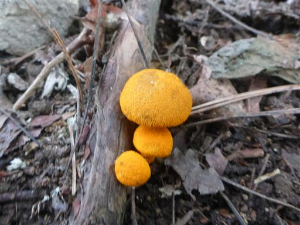
登山道は途中から荒れた林道になる。山頂近くになって林道が現れるとは思わなかった。
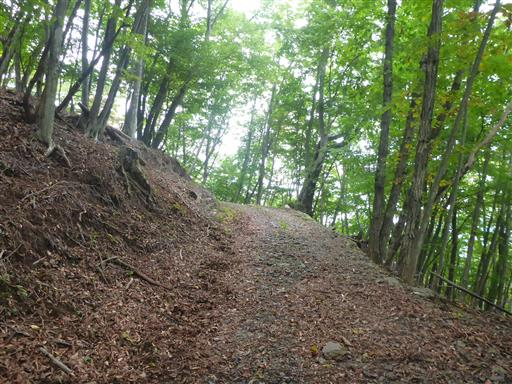
足元に栗がたくさん落ちている。娘が拾い出すので、なかなか前に進まない。
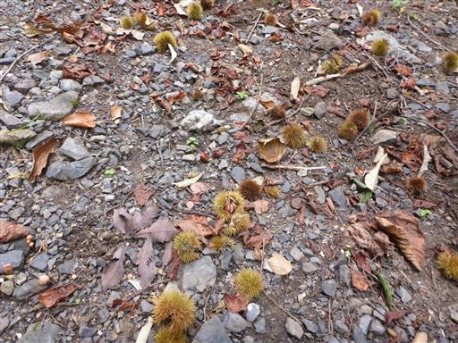
右側はネットに囲まれた幼木地帯になる。
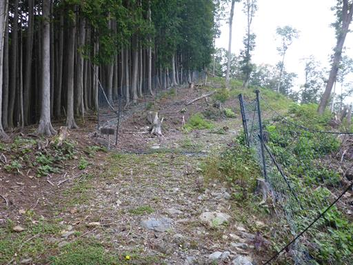
本日唯一の展望が広がる。高い山々は雲がかかっている。
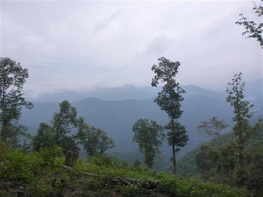
再び林道に出てくる。足元には無数の栗が落ちている。
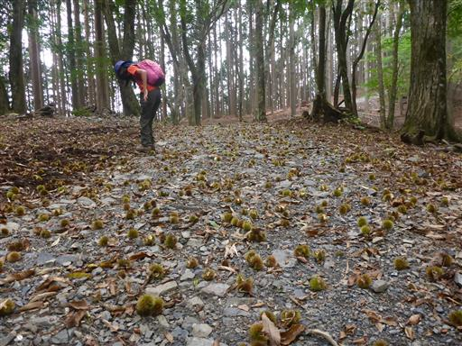
鹿倉山山頂に到着。標高1287m。
視界の全く開けない地味な山頂だ。
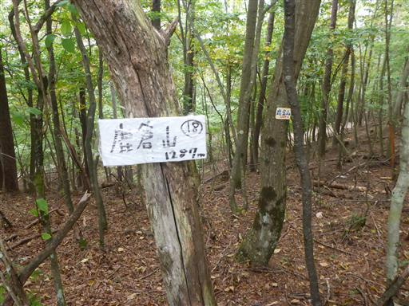
キリギリスを発見。突っつくと美しい羽を広げて飛んで行った。
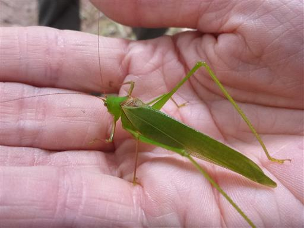
昼食をとったら往路を戻る。
林道で栗拾いをしている人に出会い、非常に美味しいと教えてもらう。
今回はほとんど拾わなかったが、たくさん落ちているので
栗拾いをするためにまた来ても良いかもしれない。
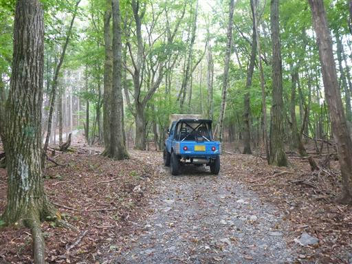
ベニナギナタタケ？
触るだけでも危険なカエンタケと似ているので、見るだけにしておく。
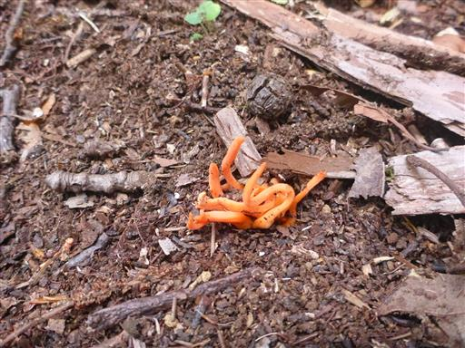
本日はキノコをよく見かける。産まれたての可愛いキノコ。
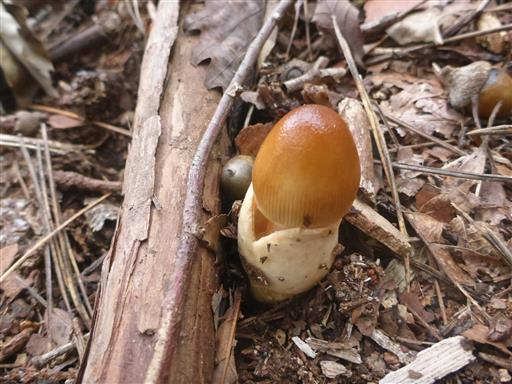
こちらは産まれる途中。
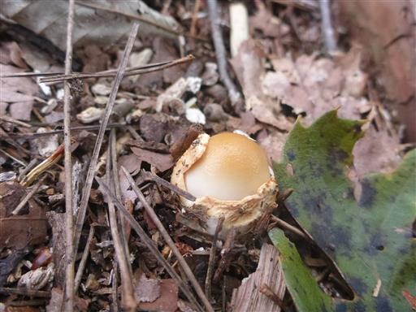
駐車場まで戻ってくる。
非常に長い登山道で娘は退屈していたが、仏舎利塔や栗拾いなど
楽しめるポイントがあってよかった。
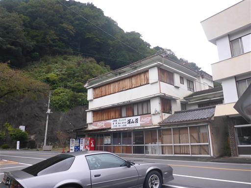